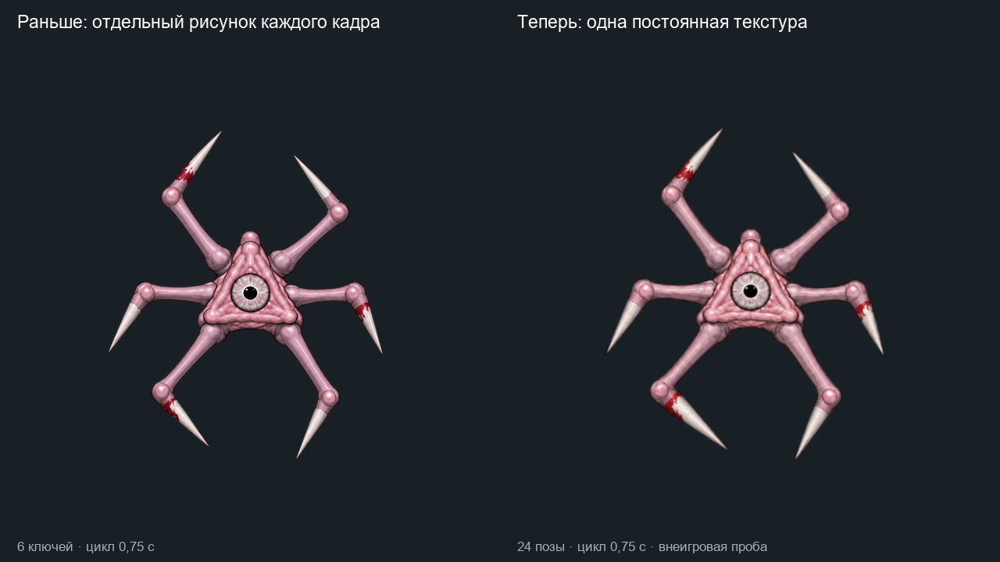
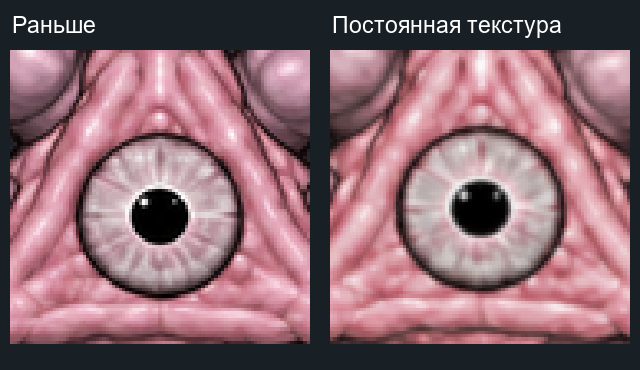

Слева прежняя C, справа один мастер на непрерывной объёмной поверхности. Оба цикла 0,75 с. Результат вне игры; художественная приёмка не отмечена.


Новый цикл на альфе · Объёмная проба Blender · Метод и ограничения